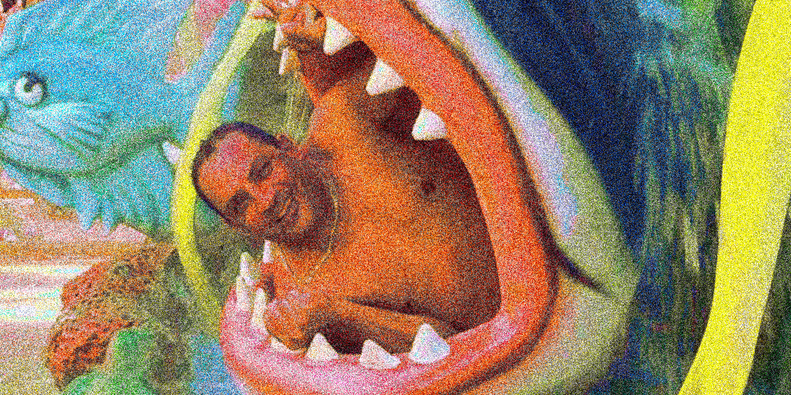

O perturbador numero 3
A Trindade Secreta
Zeca faz aniversario no 3º trimestre, no dia 23.. curioso não? então se prepare.. pois já deve ter percebido a quantidade exagerada de silabas "TRI" e numeros "3" que esse artigo contém.. isso não é um acaso!

Fonte: Facebook Original do Zeca - A Tripofobia [imagem editada]
O nome de Zeca também tem alguns segredos, como o fato da letra Z ter 3 linhas, e a soma do restante das letras também ser 3, fora que dá pra escrever todas as letras de seu nome usando apenas 3 linhas cada, e a letra C de Zeca pode ser substituida por um K que também tem 3 linhas. Zeca também tem 3 nomes em seu nome de registro: José Carlos Domingues, e seus 3 filhos também tem 3 nomes cada.
Curiosamente, em tempos antigos o Zeca abastecia o carro com 5 reais, o que é no minimo curioso... talvez por se tratar de um veiculo de 4 rodas o 3 seria o numero antesequente: 5, 4, e 3... bizarro não acha??
Fonte: Facebook Original do Zeca - Trilouco [imagem editada]
Já percebeu como um triciclo é um triangulo se visto de cima? alguns acreditam que isso remeta de alguma forma ao simbolo iluminati, fora que Zeca tem 2 irmãos, formando assim 3 filhos da mesma mãe, e lá está novamente o Triangulo familiar!
Zeca além disso tem 3 filhos, e também 3 celulares, 3 rodas, 3 salários, playstation 3, 3 pernas, já teve 3 carros: a variante, a brazilia e também o gol que por sinal tem 3 letras em seu nome.... surpreendente não?
Fonte: Facebook Original do Zeca - A Gambiarra [imagem editada]
Zeca também se relaciona com a IZA, que tem 3 letras em seu nome, e ele criou uma arte homenageando-a que pode ser vista na imagem abaixo, onde a palavra IZA ZECA se cruzam, formando uma especie de letra T se visto apenas as letras que compões esse cruzamento.
A letra T que é uma letra de 3 pontas e também a primeira letra do Trivale, de Triangulo, Travessia, Triciclo... acho que agora você entendeu onde estamos chegando!

Fonte: Facebook Original do Zeca - T da questão [imagem editada]
CIPA???
Se engana muito quem acredita logo de cara que CIPA tem o genérico significado de Convenção Interna de Prevenção de Acidentes, nome esse que é utilizado em diversas firmas do Brasil, atribuídos a funcionários que atuam em processos de segurança do trabalho.
Fonte: Facebook Original do Zeca - Tração [imagem editada]
No TRIVALE, o termo CIPA na verdade significa Companheirismo, Irmandade, Parceria e Amizade, que se destaca por seu poderoso ciclo redundante, onde todas as palavras tendem a significar a exata mesma coisa!
CIPA representa então 1(um) loop infinito de 4(quatro) palavras, ou seja, o numero 14(quatorze), e considerando que 3(três) é o numero principal do trivale, temos o então o resultado numero 3,14 (três virgula quatorze) que é o já conhecido numero de PI proposto pelo matematico galês Wiliam Jones, e é conhecido também como constante de arquimedes onde representa a relação entre o perimetro de uma circuferencia e seu diâmetro, resultando num ciclo, que se conecta com a teoria descrita acima do triangulo iluminati, combinando ambas temos um Triangulo ciclico ou Triciclo.
Fonte: Facebook Original do Zeca - Rumo ao Culto Secreto Iluminati [imagem editada]
O simbolo de triangulo junto ao circulo em algumas culturas significa o Equilibrio, em outras, a antiga alquimia e até simbolos egipcios e espirituais, o que eles estão tentando esconder de nós? só o tempo dirá.
.Fonte: Facebook Original do Zeca - Trinimigo [imagem editada]
Veja os Creditos >
Epilogo
O Rumo ao sol